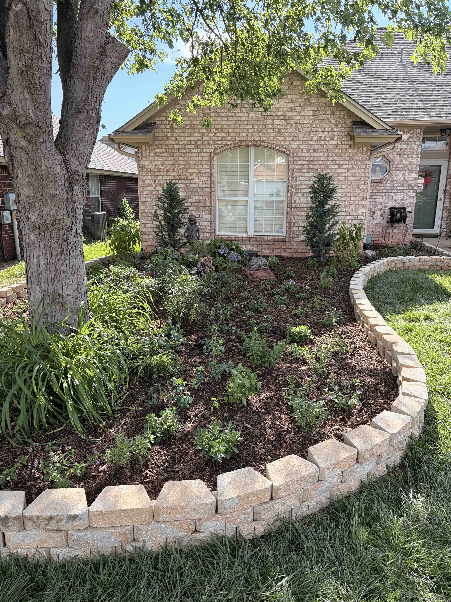
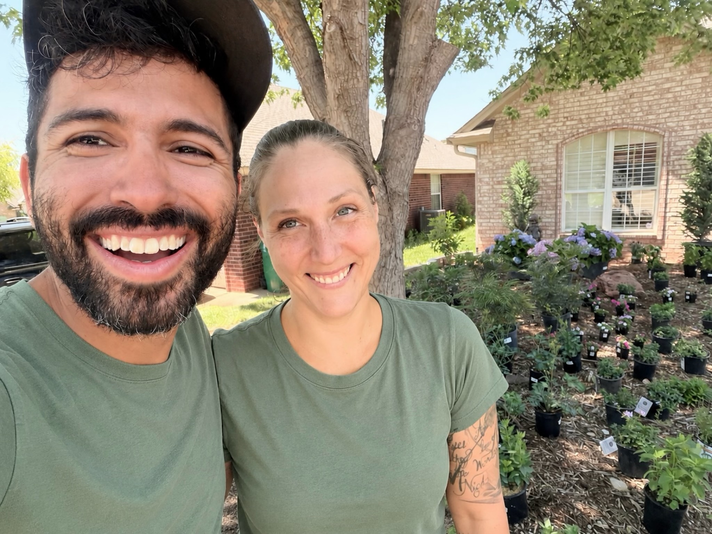

Arborist-Led Tree & Estate Care
Technical tree removal, mature-tree pruning, and landscape stewardship, in Edmond and Oklahoma City.
Technical tree removal, mature-tree pruning, and landscape stewardship, in Edmond and Oklahoma City.


We specialize in mature trees, difficult access, occupied properties and situations where judgment and precision matter.
From young tree training to mature canopy management, we provide thoughtful pruning that improves structure, clearance, safety, and long-term health. Services include crown cleaning, crown lifting, deadwood removal, clearance pruning, structural pruning, and preservation-focused care for valuable trees.
When a tree becomes a risk to people, homes, vehicles, or infrastructure, we help clients evaluate their options and execute removals safely when necessary. We specialize in technically challenging removals, storm-damaged trees, declining trees, and confined work areas where precision matters.
Not every tree problem requires immediate cutting. We assess tree health, structural defects, storm damage, root conflicts, site conditions, and long-term management goals to help property owners make informed decisions. Whether caring for a single specimen tree or an entire property, we provide practical recommendations grounded in arboriculture and land stewardship.

Some properties deserve more than occasional mowing or reactive tree work. Estate stewardship is an ongoing relationship centered on the long-term health, safety, beauty, and ecological function of a property. Rather than treating trees, gardens, lawns, and woodlands as separate services, we manage them as one interconnected landscape.
We prefer proactive care over deferred maintenance. Small, thoughtful interventions performed consistently preserve the character of a property, reduce costly failures, and allow landscapes to mature gracefully over time.
405. 953. 1285
Our pollinator gardens attract bees, butterflies, and birds while enhancing your landscape's beauty. We use native plants that provide year-round nectar, pollen, and habitat, supporting vital ecosystems. Thoughtful design ensures seasonal blooms, natural pest control, and soil health. Whether a small bed or a full garden, we create beautiful thriving spaces that sustain pollinators and bring life to your yard.

Not every property needs immediate work. Sometimes the most valuable service is understanding what you're looking at, what risks exist, and what options are available. Our consulting services help homeowners, landowners, and property managers make informed decisions about trees, landscapes, drainage, vegetation management, wildlife habitat, and long-term property stewardship.
Whether you're concerned about a hazardous tree, planning a landscape renovation, evaluating storm damage, managing a woodland, or simply trying to determine the next best step for your property, we provide practical recommendations grounded in arboriculture, horticulture, and real-world field experience.
Consultations may include tree risk assessments, pruning recommendations, removal evaluations, species selection, habitat enhancement opportunities, invasive species management, maintenance planning, and written reports when requested.
Discover a wonderful world of practical tips, and ecological exploration.

Hi! We're Christian & Christina— a husband-and-wife team with a shared passion for nature, faith, health, and caring for God's creation. With almost ten years of marriage and our three adventurous children by our side, we've built our business around what we love most: caring for trees, restoring the land to Eden, and bringing thoughtful, sustainable design to every project.
Christian is the hands-on expert, specializing in arboriculture, and the hard work that brings a vision to life. Christina provides the creative touch, blending design and horticultural knowledge to craft spaces that are both functional and naturally stunning. Together, we create landscapes that are not only beautiful but also enrich the environment and the people who enjoy them.
When we're not working, you'll find us exploring the great outdoors with our family, prayerfully preparing for the day we can build and operate our own eco-friendly homestead. Until then, we're dedicated to bringing a little more beauty and sustainability to the world—one joyful customer at a time.